Freizeit-Tipps
Die Ferien sind um und das KABU-Team hat Kinder in deinem Alter gefragt, wie sie die Ferienzeit genutzt haben. Vielleicht sind ein paar gute Tipps für dich dabei, die du nicht nur in den Ferien, sondern auch am Wochenende nutzen kannst!
Die Kinder haben zusätzlich tolle Bilder von ihren Lieblingsbeschäftigungen gemalt!
💭 RoboBoard Die Kinder haben zusätzlich tolle Bilder von ihren Lieblingsbeschäftigungen gemalt!
Tipp Nummer 1: Freunde treffen
Egal, ob du bei einem Freund übernachtet hast, ihr gemeinsam raus gegangen oder Rad gefahren seid, ihr am Zocken wart oder vielleicht Fußball gespielt habt: Gemeinsame Aktivitäten standen auch dieses Jahr in den Sommerferien im Mittelpunkt.
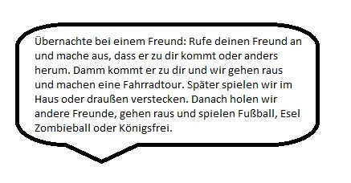
Kennst du schon das Spiel Könifgsfrei?
Tipp Nummer 2: Spielen
Neben der gemeinsamen Zeit mit Freunden, gehen viele Kinder gerne Schwimmen, um sich bei heißen Tagen abzukühlen. Auch Fußball spielen, Reiten, Turnen und Spazieren gehen sind Freizeitbeschäftigungen in den Ferien. KABU hat nachgefragt, welche Spiele und Orte besonders schön sind, um sich die Zeit zu vertreiben und hat prompt folgende Antwort erhalten:
Skaterpark
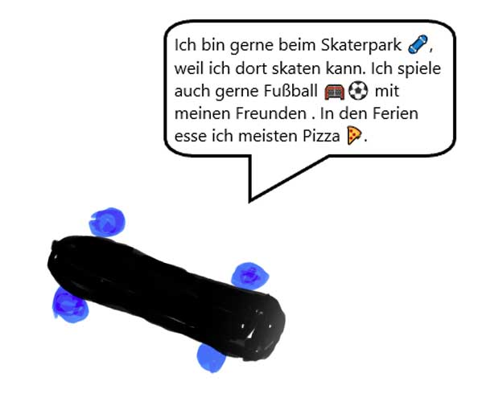
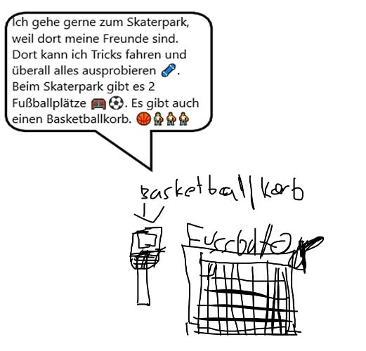
Spielplätze
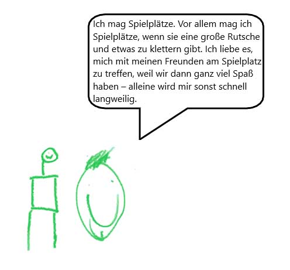
Geht es dir genauso und du verbringst viel Zeit draußen gemeinsam mit deinen Freunden?
💭 Sprechblase Geht es dir genauso und du verbringst viel Zeit draußen gemeinsam mit deinen Freunden?
Schwimmbad oder See
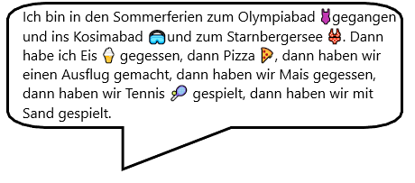
Tipp Nummer 3: Medientipps und Spiele
Uno
Egal, ob mit Freunden oder der Familie. Das Kartenspiel Uno ist noch immer sehr beliebt:
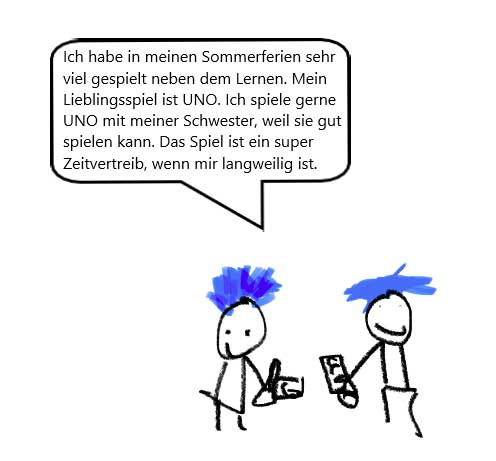
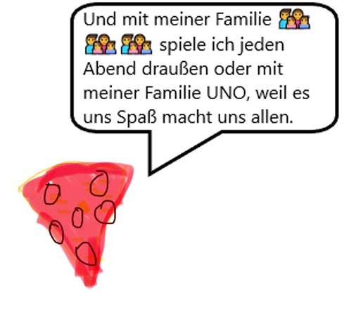
Medientipps
Kennst du schon den Film „Rocca verändert die Welt“? Die Kinder waren so nett und haben Dir ihren Lieblingsfilm beschrieben! Die Altersempfehlung ist für Kinder ab 8 Jahren.
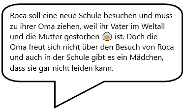
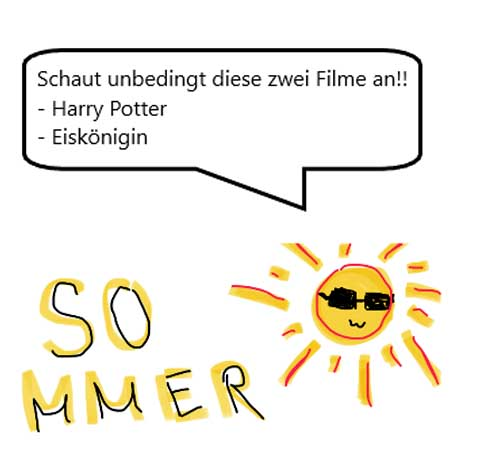
Frage vorher deine Eltern nach der Altersfreigabe!
💭 Denkblase Frage vorher deine Eltern nach der Altersfreigabe!
Tipp Nummer 4: Zeit für ein Hobby
Zeichnen und Lesen sind nur ein paar der Lieblingsfreizeitbeschäftigungen!
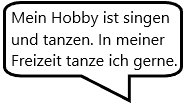
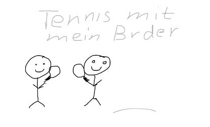
Tipp Nummer 5: Abkühlung für Naschkatzen
Neben Tipps und Freizeitbeschäftigungen haben die Kinder ein paar Rezeptideen und Essensvorschläge für dich aufgeschrieben - hier sind auch ein paar Lieblingsgerichte zu finden! Frag am besten deine Eltern, wenn du etwas davon nachmachen möchtest!
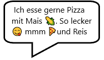
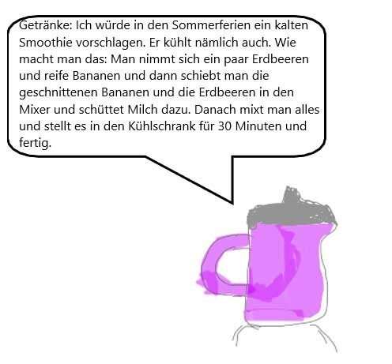
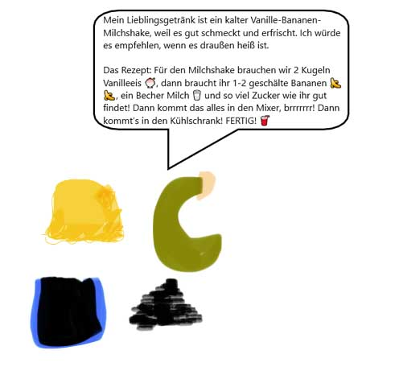
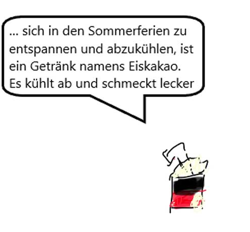
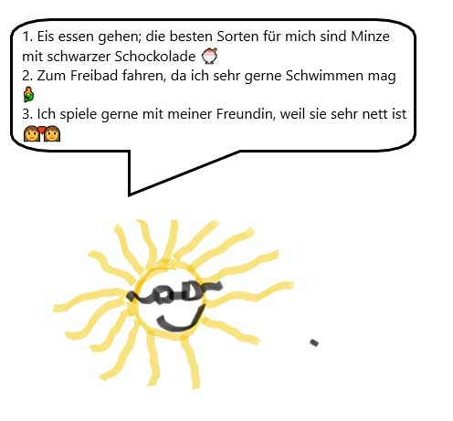
Hast du noch ein paar Freizeit- oder Ferientipps? Schreibe gerne der KABU-Redaktion!
Das geht ganz einfach, indem du auf den blauen Button Schreib dem KABU-Team tippst, den du am Ende des Beitrags siehst. Wenn du möchtest, veröffentlichen wir auch deine Antwort!
Dein KABU-Team
Auflösung Rätsel
Hier findest du die Lösung zu unserem Quiz “Freizeit-Rätselpaß”. Die richtige Antwort ist “C”. Die Kinder möchten gemeinsam Tennis spielen.